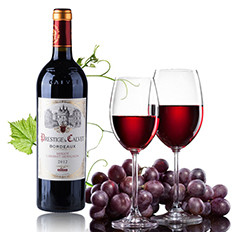
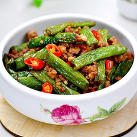

最新饮食健康新闻为您奉上。 |
 |
 |
 |  |
考前饮食三大忌，这些坑你不要踩11 评论5775 人气 |
冻鱼保鲜保营养吗?60 评论11911 人气 |
年末应酬多，喝酒前后饮食有讲究11 评论7309 人气 |
哪些啤酒谣言还在飞?16 评论5049 人气 |
 |
 |  |
 |
睡觉打鼾吃什么好？12 评论7919 人气 |
凉拌或油炸四季豆易中毒9 评论7453 人气 |
办公室常备3类健康零食18 评论9432 人气 |
这5类食物不甜但糖分高6 评论4444 人气 |